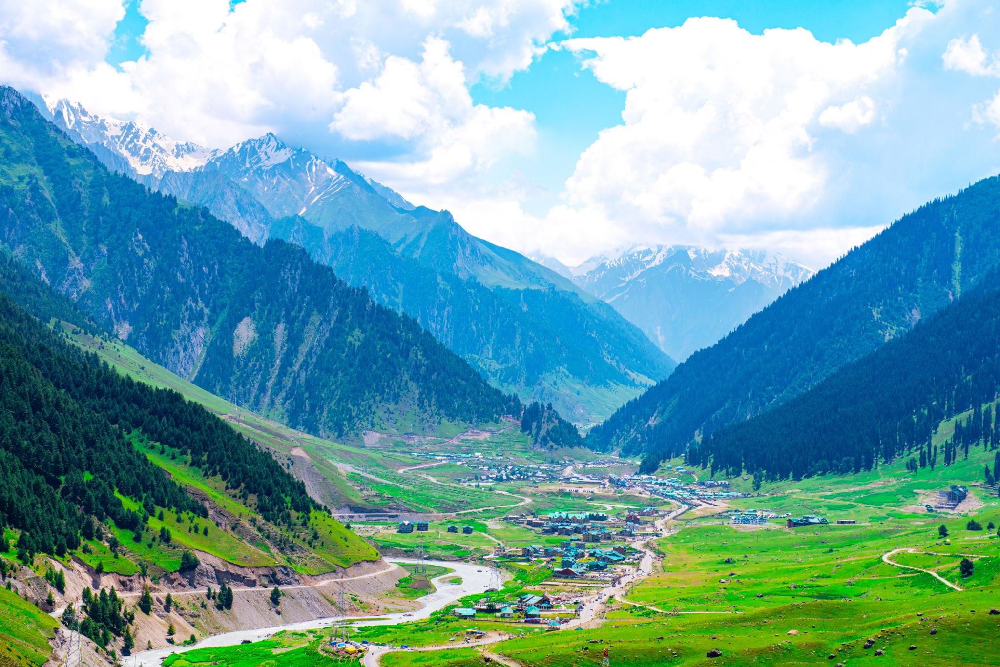
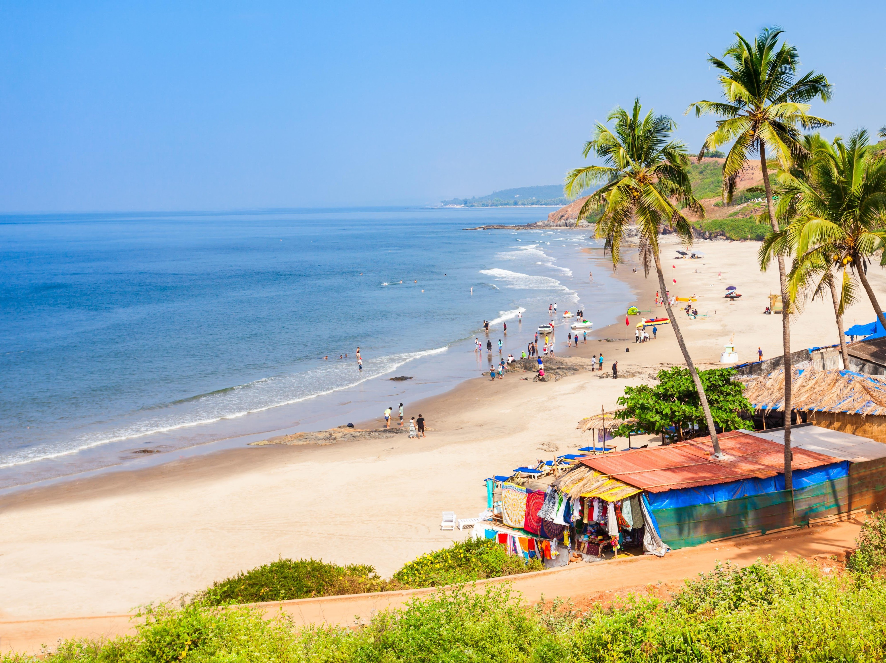
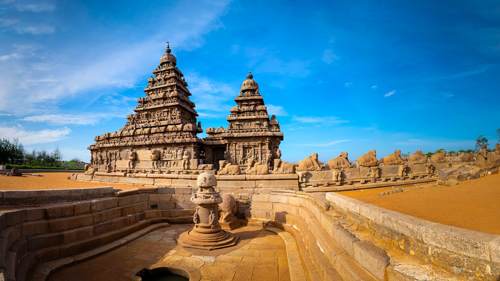
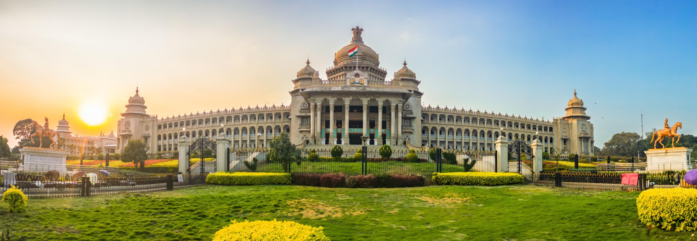
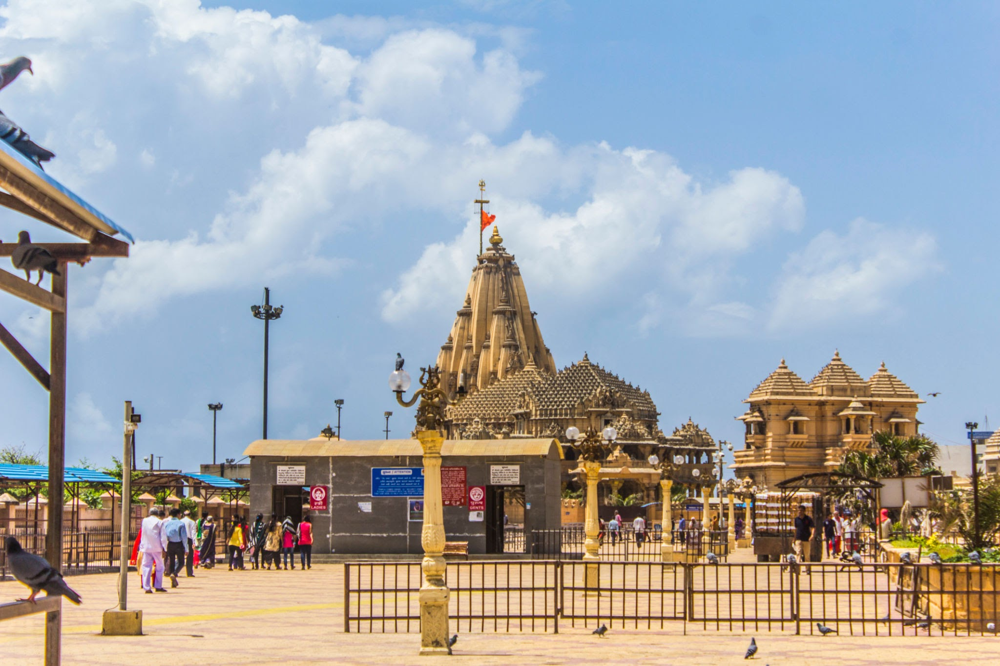
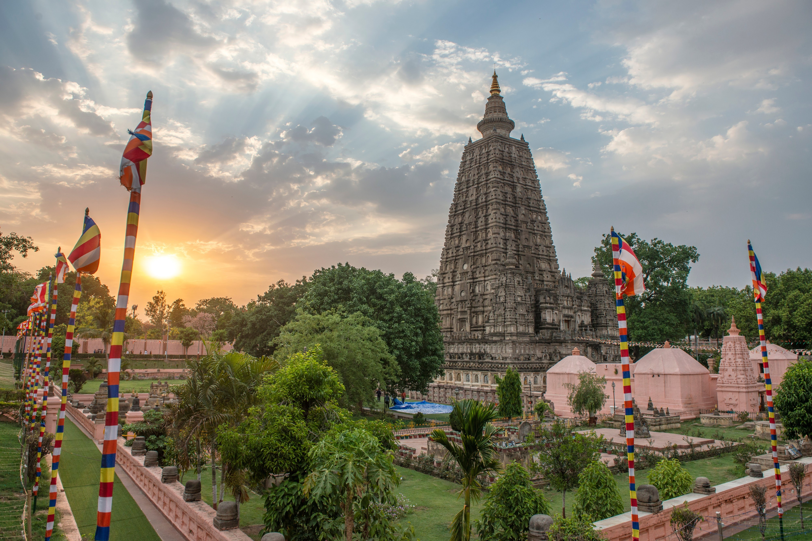
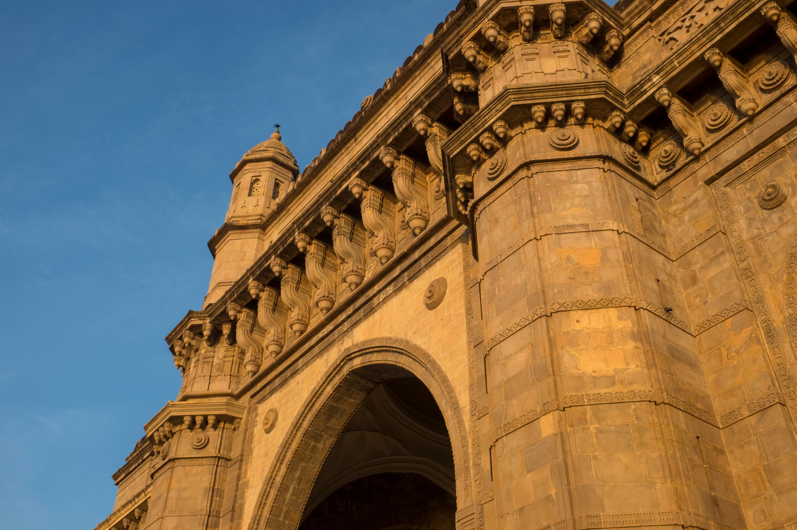

North India
Jammu & Kashmir
Alpine valleys, quiet lakes and Himalayan journeys.
From north to south
Search iconic landscapes, storied cities and memorable local experiences from across the country.
Explore by region
36 destinations

Alpine valleys, quiet lakes and Himalayan journeys.

Desert landscapes, palaces and living royal heritage.

Backwaters, green hills and a slower rhythm of life.

Sunlit beaches, heritage quarters and coastal food.

Great temples, classical arts and ancient towns.

Mountain trails, cedar forests and peaceful valleys.

Literature, festivals, tea country and the Sundarbans.

Heritage ruins, wild forests and modern city life.

White salt desert, wildlife and colourful craft.

Ancient learning centres and sacred pilgrimage sites.

Big-city energy, cave temples and hill escapes.

Temple towns, beaches and bold regional cuisine.

Warm hospitality, fertile fields and vibrant festivals.

Monumental heritage, sacred rivers and old cities.
Try another name or choose a different region.